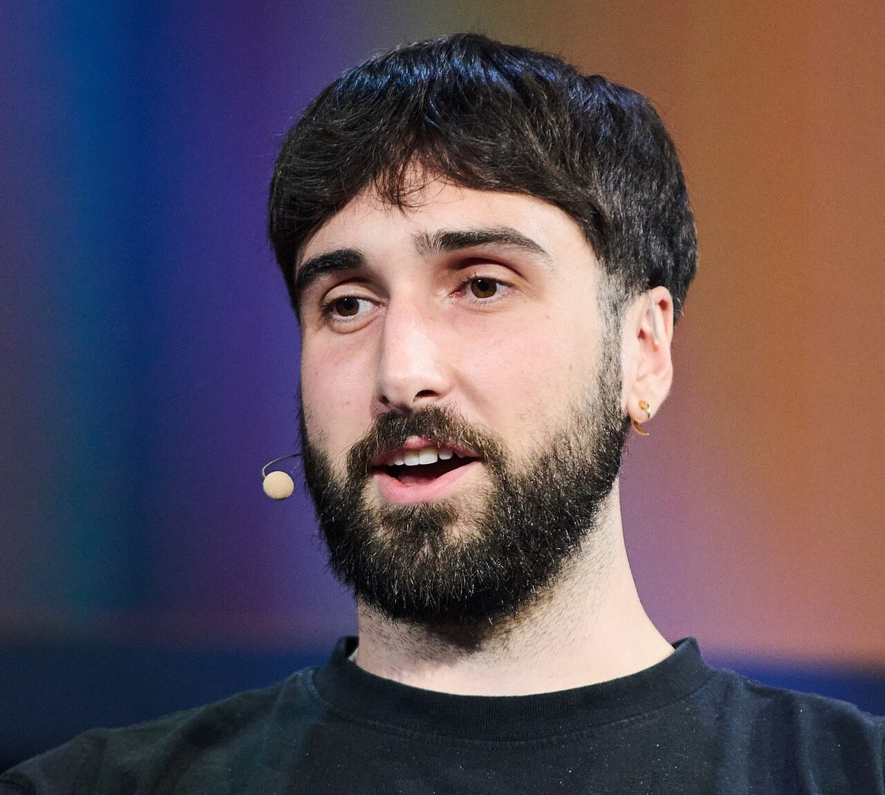

Le Chonk's weights go public as Cohere raises Canada's biggest round
Mistral's flagship arrives under a modified MIT license, and Cohere is raising money for sovereign AI with Ottawa as an investor. A small lab's leaner model passed two outside tests.
Arthur Mensch @arthurmensch · CEO, Mistral AI
"Good progress in the last few weeks ! And now the weights," Mensch wrote at 10:59am EDT Thursday, quoting his company's announcement. Mistral said Le Chonk ranks first among open models on Cognition's FrontierCode test and is state of the art in cyber defense, after testing by CrowdStrike, Cloudflare, Rubrik and Zscaler. The model card describes a mixture-of-experts model with about 1 trillion parameters, 49 billion of them active per token, a context window of 1 million tokens, and text and image input. It was trained on 3,800 Nvidia Grace Blackwell GPUs in Europe.
The weights ship under the Mistral Ecosystem Open-Weight License, a modified MIT license. Anyone may use and modify the model, but a company that sells it as a hosted service needs a separate commercial license. Checkpoints come in FP8 and NVFP4 formats, SiliconANGLE reported. Michael Dell (@MichaelDell), chief executive of Dell Technologies, wrote at 5:59pm EDT that the model is now on the Dell Enterprise Hub on Hugging Face for on-premises use: "On prem, private and secure, unmetered intelligence."
Aidan Gomez @aidangomez · CEO, Cohere
Cohere announced the initial close of its Series E at 11:49am EDT Thursday. The round targets up to C$7 billion at a C$35.7 billion valuation, which the company called the largest private round in Canadian startup history. Schwarz Group, the German retailer, leads. Bell Ventures, Bullhound Capital and the Government of Canada are new investors, and Nvidia, Inovia Capital and Prosperity7 Ventures returned, according to the press release. Ottawa is committing up to C$1.6 billion. The company announced the round at Mila, the Quebec AI institute in Montreal.

Gomez spent the day thanking backers. Jeff Dean (@JeffDean), chief scientist at Google, wrote at 1:46pm EDT: "Congrats, @aidangomez and everyone at @cohere!"
Suhail Doshi @Suhail · Founder, Particle
A day after launching particle-1, Doshi pointed to two outside checks. Particle's account said the model matched its base model, DeepSeek V4.1 Flash, on Parallel's web-research test, 69.2 to 68.9, with 42% fewer output tokens. Doshi called it validation on "something we couldn't train on and is real-world" at 9:41am EDT. Later, the real-swe coding benchmark reported the same performance with 43% fewer tokens, and Doshi wrote at 4:04pm EDT: "Independently validated in real-swe!" His goal, at 11:17am EDT:
"We are going to drive cost per task to zero. We will not allow a duopoly to tax humanity on intelligence. We trained on humanity's data, the least we could do is give back and let everyone prosper."